Every one of these is a real Gophics app, compiled to WebAssembly and running on WebGPU in your browser — the same code that builds a native desktop binary. Needs a recent Chrome, Edge, or Safari. Each demo links to its full Go source.
The toolkit at a glance, a real networked app, and the smallest complete source.
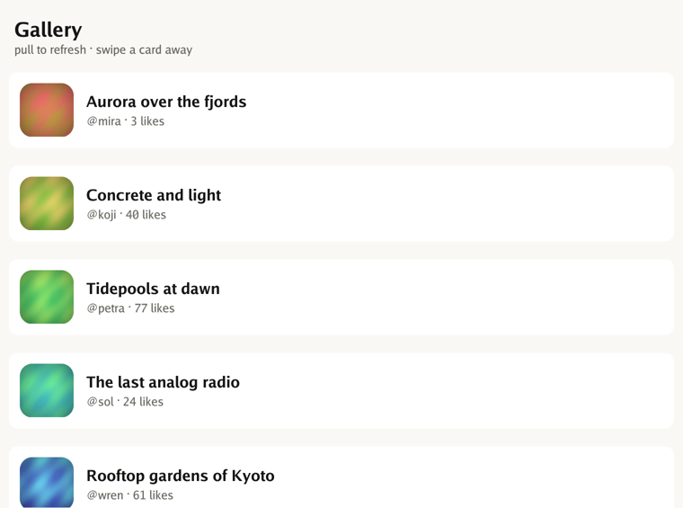
A tour of the toolkit — buttons, forms, switches, sliders, overlays, and the layout primitives.
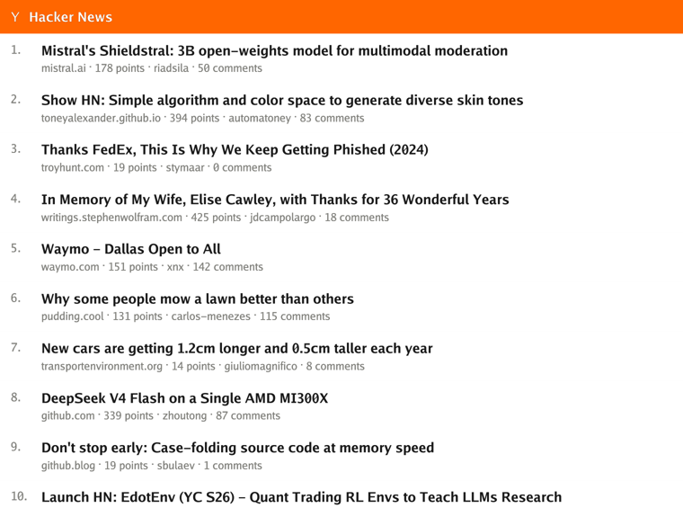
Networked feed → comments, rich text & links, navigation, lazy lists, pull-to-refresh.
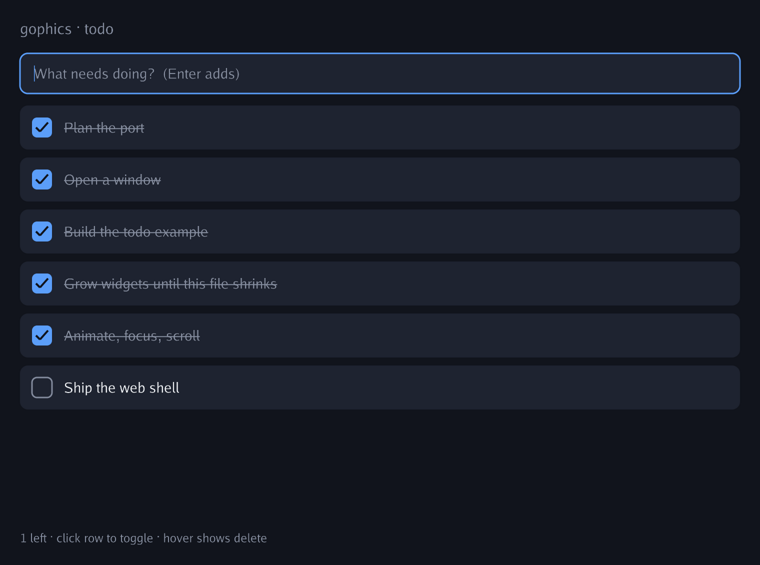
Stateful widgets, keyed reconciliation, hover animation, tap-to-focus text input, scrolling.
Live data, local storage, typeset text, and the platform bridges.
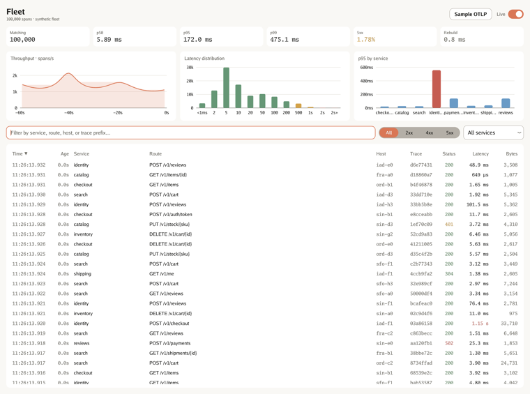
A live request explorer over a rolling window of 100,000 spans. A goroutine serves a synthetic fleet at ~1,400 req/s; the dashboard re-filters and re-sorts the whole window several times a second and draws stat tiles, three charts, and a virtualized table from one pass — and shows how long that pass took. Loads real OpenTelemetry OTLP/JSON exports, with a sample capture built in.
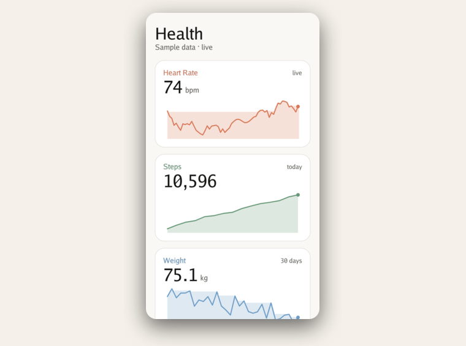
A live health app — real-time heart rate, steps, weight & sleep, each with a custom-painted chart; tap through to detail views. Built to bind HealthKit / Health Connect on device.
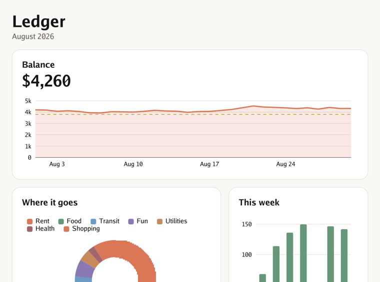
A local-first personal-finance dashboard, and the driver app for the built-in chart package: a balance area chart against a budget rule, a spending donut, and a weekly bar chart, all animating in on mount from one sample dataset. Offline, no network.
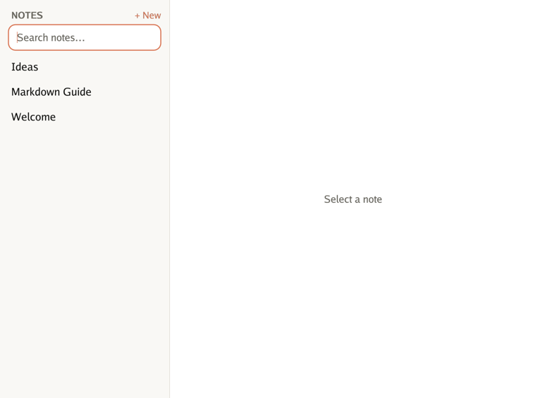
A local-first Markdown editor — text editing, state-as-data, file persistence (File System Access on web).
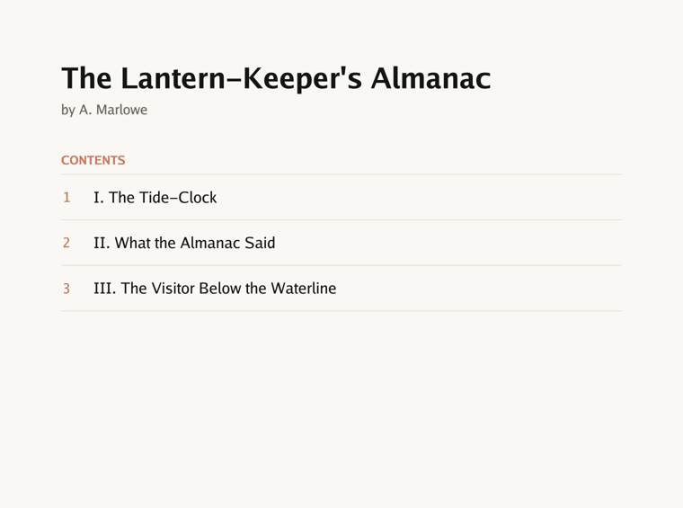
A real .epub (zip + OPF + XHTML) built and parsed in-memory, rendered as a typeset reader — title page, contents, scrollable chapters. Shows off the pure-Go text engine; works fully offline.
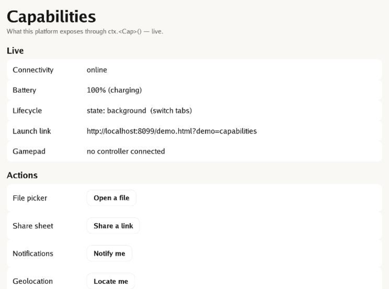
One live inspector for every platform bridge — connectivity, battery, lifecycle, deep links, gamepad, geolocation, file picker, share sheet, notifications, secure storage, clipboard, IME and more. Each is a plain ctx.<Cap>(); the same Go code lights up whatever the host provides. Open it in a browser and watch it read your real device.
The escape hatch — dropping to the canvas when no widget is the right shape.
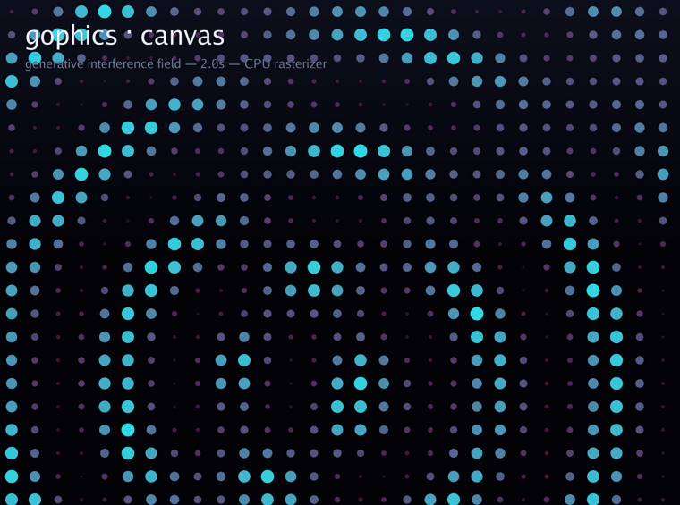
The escape hatch — hundreds of shapes plus live text, re-recorded every frame on a raw Canvas.
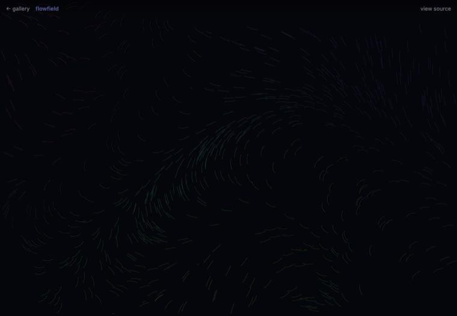
Hundreds of particles trace an evolving sum-of-sines field as braided, colour-mapped streamlines.
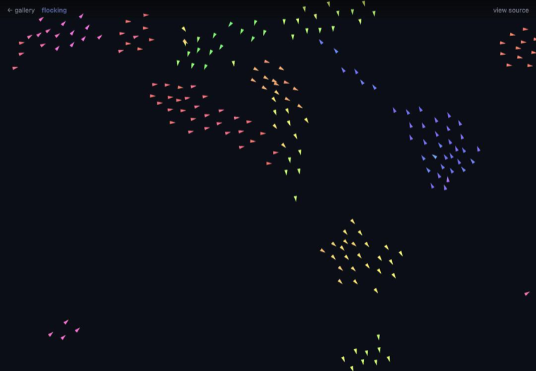
Craig Reynolds' classic — separation, alignment, cohesion. Emergent flocking from purely local rules.
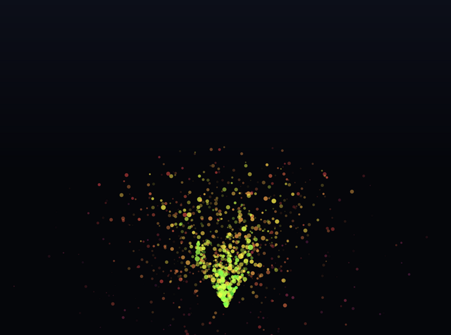
Coloured sparks arc under gravity and fade out — a particle system, re-recorded every frame.
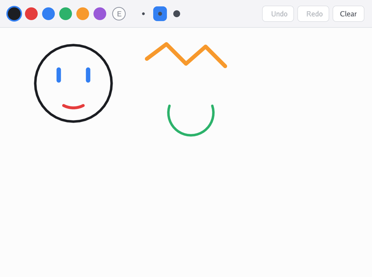
A freehand vector sketchpad: drag to lay down smooth round-capped strokes, pick a color and width, erase, and undo/redo. Each mark is a retained paint.Path built live from pointer drags and stroked on the GPU — the interactive drawing + gesture path end to end.
Input, animation, sprite atlases and audio on the same widget stack.
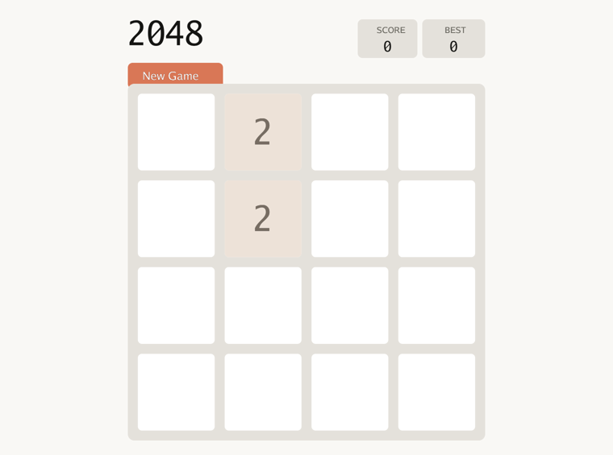
The sliding-tile puzzle — arrow keys or swipe, with smooth slide & spawn animation. One Canvas, ~350 lines, unit-tested logic.
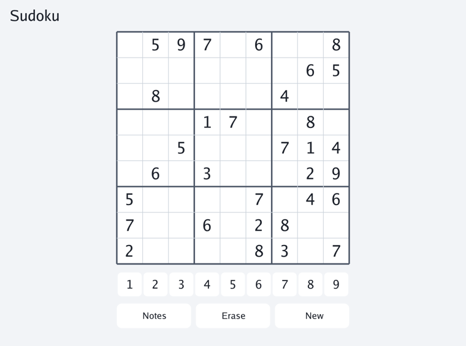
Puzzles generated with a guaranteed-unique solution (backtracking solver). Tap or arrow-key a cell and type 1–9, toggle pencil-mark Notes, with live conflict highlighting. Keyboard on desktop, on-screen keypad on touch.
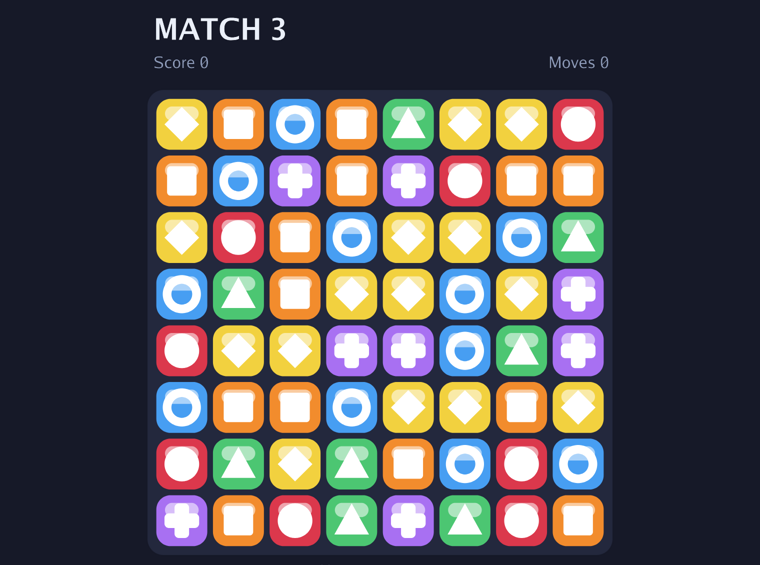
Drag, tween, cascades, particles and sound — a game on the same widget + paint stack.
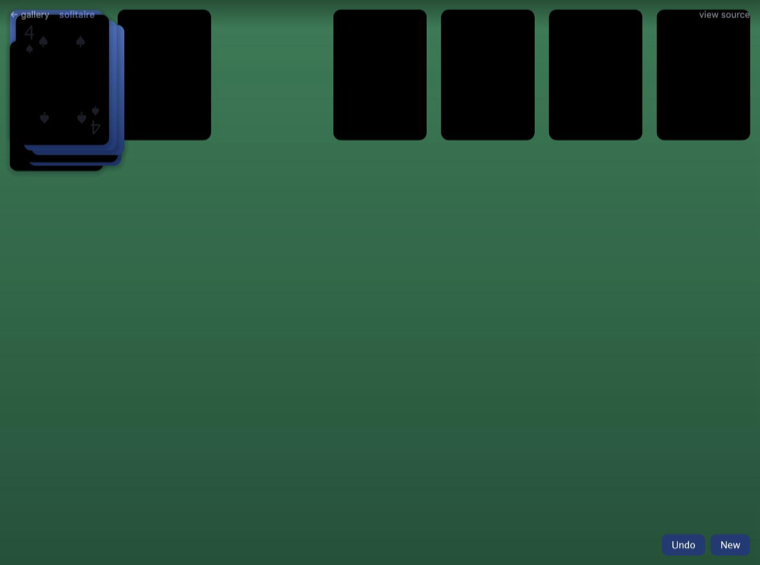
Drag-drop by overlap, deal/flip animations, auto-complete, a win cascade — real card faces, zero assets.
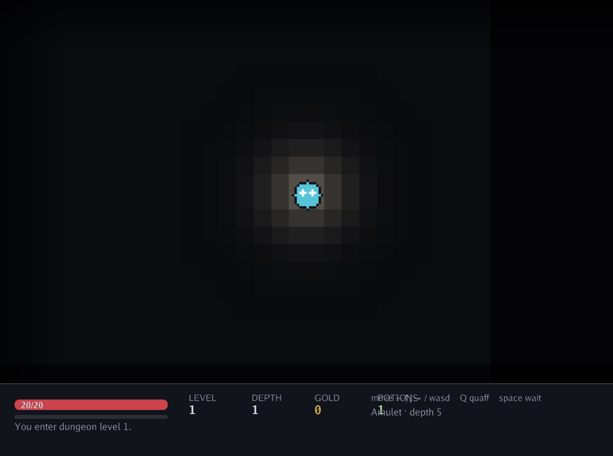
A sprite atlas, held-key movement, positional audio, torchlight tinting — the games stack end to end.
Synthesis from scratch, the microphone, and the camera.
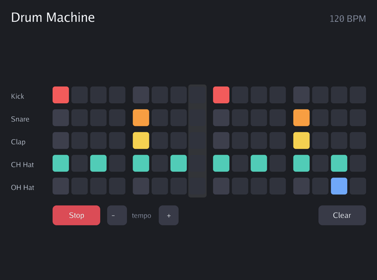
A 16-step sequencer whose kick, snare, clap, and hi-hats are synthesized from scratch (no audio assets) and mixed live through the pure-Go audio engine — CoreAudio/WASAPI/PulseAudio on desktop, Web Audio in the browser. Program a beat, hit Space, ride the tempo. Turn your sound on.
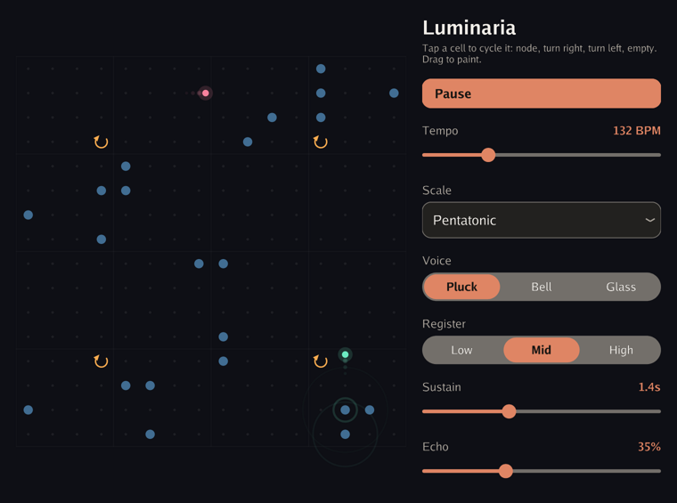
A generative instrument after Toshio Iwai’s Electroplankton and the Tenori-On: crawlers walk a 16×16 matrix, turn where you put a turn, and ring every node they cross — pitch from the row, stereo pan from the column. Karplus-Strong, FM, and pad voices are synthesized in Go, and the control panel is ordinary themed widgets beside one widget.Canvas. Turn your sound on.
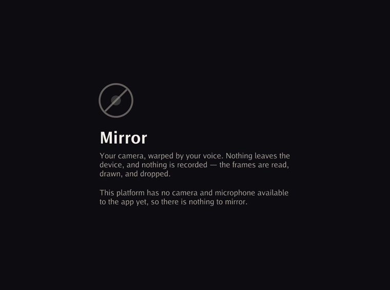
Your camera, warped every frame by what the microphone hears: columns of the image rise with the energy in their part of the spectrum, rows slide on a wave that grows with loudness, and the colour channels split as you get louder. The driver for the live-capture capabilities — frames arrive as *image.RGBA and the warp is a plain Go pixel loop, no shader. Needs camera and microphone permission; without both it says so and offers nothing to press, rather than substituting a stand-in that would look like a working demo.